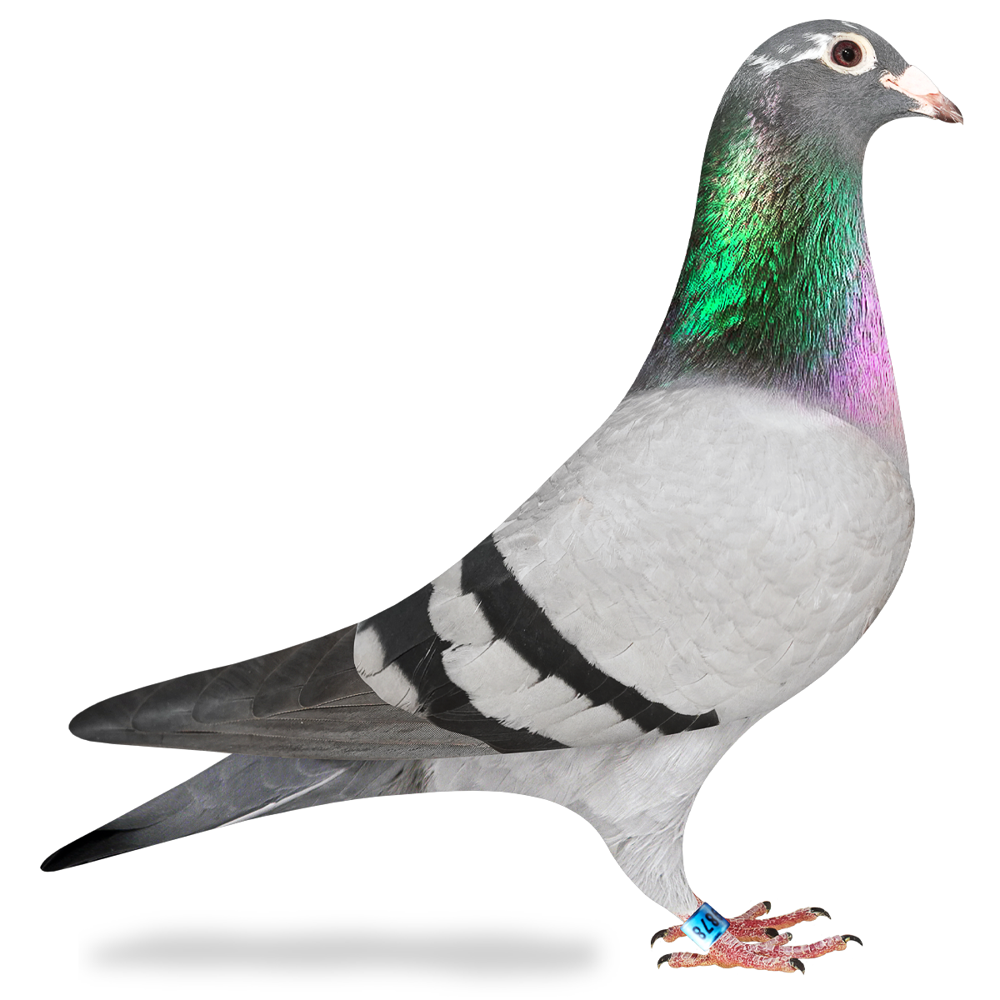
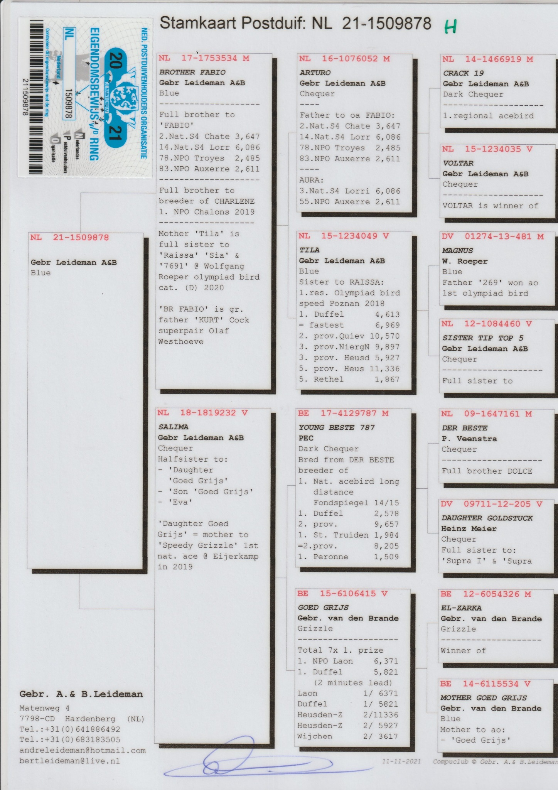

Kweekprofiel
NL21-1509878 · Gebr. Leideman

Leideman
NL21-1509878
Aodo is een rechtstreekse Leideman-duivin die de sterke Nederlandse prestatielijnen naar RVH Pigeons brengt.
Beschikbaar beeldmateriaal van Aodo.

Eén duidelijke stamboom per duif, zodat de pagina rustig en professioneel blijft.
